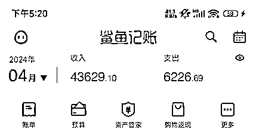
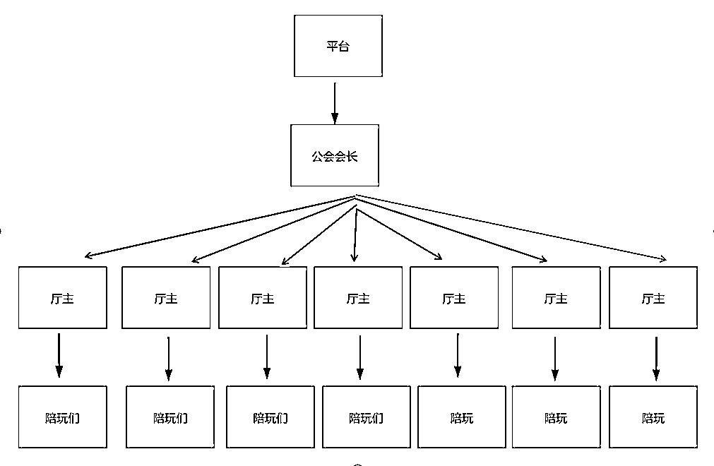

来源：https://riupvml5qjl.feishu.cn/docx/S70mdAEgCom35cxmcQUcICP1nBe
Hello，各位圈友们，大家好。
我是XX，主要聚焦于AI写作和线上游戏陪玩两个领域。
疫情爆发的那一年，辞掉了上市公司亚马逊运营的工作回到长沙，从游戏陪玩到语音厅厅主，经历过一个月收入几百，也有过月收入8万的时候，但最终负债20万收场。
去年生财会员日时，带着一身负债加入生财，经历了一年的摸爬滚打，终于在今年找到了适合自己的项目。
过年完后从零开始学习新项目，单打独斗到今天，100天不到，还了6万负债，负债还剩余14万，最高月收入4万+。

今天给各位圈友分享一下近几年的经历，有一些是成长过程中的感悟，有一些是实操过程中的干货，感谢生财这个大平台，在这里真的接触到了很多很多的项目，最终也找到了目前来说特别适合自己的项目。写得不好的地方，还请多指教！
作为一名重度网瘾少女，17、18年就开始接触了陪玩行业，那时候比心单子很多，基本上注册了就能有咨询，但我白天上班，所以经常接单了再低价转出去找别人去陪客户打游戏。回长沙之后，找工作不大顺利，就干脆在家做自由职业了，最开始的考虑是一边做游戏陪玩保证自己的基本生活，一边做自媒体。
奈何我高估了自己，打了一天游戏，根本不想做别的事情，自媒体压根没有开始就夭折了。前段时间胖猫事情那么火，都说陪玩代练赚钱，实际上确实挺赚钱的，但挺分人的。男孩子的话，很看技术，或者就是情商很高声音又好听（这种情况的男生其实也还是需要点技术的），女孩子的话，对游戏技术没那么高要求，情商高声音好听也是很能赚钱的。如果有点技术，声音好听，情商还高，那就更容易赚钱了。
但我是一个i人，并不喜欢跟陌生人聊天，也不会聊天，游戏技术也菜（我玩游戏不喜欢动脑子），所以一开始作为一名游戏陪玩，我压根不怎么赚钱。直到一次偶尔的机会，我想多找点事情做，在朋友圈看到当时陪玩公会的会长在招管理，我就去私聊了，然后顺利成了一个XX平台上的派单厅厅主。
派单厅是什么呢？有些圈友可能不大理解，派单厅其实就是一个语音直播间，会有一名接待，当有客户想点陪玩单，就可以申请上麦，把要求（XX游戏，要男/女陪玩，音色要求等等）告诉接待，接待会把单子派出，之后整个平台上符合要求的陪玩都会收到派单提示，想接这个单的陪玩就会进来直播间试音，老板再选个人下单即可。
那厅主盈利是靠什么呢？平台上接单或者收到礼物，平台都会扣除一部分，平台扣除的这部分会按到提点发给公会会长，会长再按照提点发给厅主，也就是这个直播间是属于我的，在这个直播间内，任何人收到礼物，都能拿一部分的提点。

而厅主的责任就是负责招人和管理，招能固定在这个直播间的人，让她们尽可能的在这个直播间多收礼物。而我这个是派单厅，需要管理的事情相对来说更少了。
做了一年多，每个月稳定在2W以上，于是就开始膨胀了，又开了一个厅，这个厅跟之前的有点差别，难度更大，当时就是觉得一个厅最低赚2万，那多开一个月，每个月五六万不是美滋滋。每个厅都有流水要求，当时是60万一个月，（也就是每个月这个厅里产生的礼物流水要达到60万以上），但接手的太仓促了，我没那么多时间招人，而且新人培养起来也需要时间，所以前面两个月都是自己亏钱去完成考核的。负债来源也就来自于此，当时是觉得前期亏一点，做起来了能赚回来，但没想到没做起来，因为我的性格真的很不适合做这样的管理，我不会来事，也不喜欢主动聊天，而且性格比较软，对于跟着自己长时间的员工比较容忍，加上新开的厅跟之前的派单厅模式不一样，对管理这一块的要求更高。
2023年5月份之后，国家出手打击平台上抽奖的行为，导致月流水一掉再掉，我的派单厅每个月收入也就只有3-5K了。于是我开始积极寻求新的项目。
经历了这一个项目之后，我总结了几点感悟：
1）朋友就朋友，不要轻易拉着一起做生意/创业，除非能确定你们俩三观一致。（期间觉得这个行业赚钱，还拉着自己朋友在别的平台开过厅，但由于我和朋友的处理事情风格不一样，最后惨淡收场，朋友都几乎没得做了）
2）选择项目还是要根据实际出发，不能光看到别人赚钱或者说能赚钱就一股脑投入，也不要想当然。
3) 不要错把平台的优势当成个人能力。（现在回想起来，我在这里赚到的钱并不是我的个人能力，而是运气好碰到一个不错的平台，以及一个愿意带新人的会长。事实上，我多次尝试在别的平台开厅，都没做起来。）
4）管理团队还是要有规章制度更好，赏罚分明，不能因为对方是自己朋友，或者说对方跟着你很久了，犯错的时候就轻拿轻放，不然迟早会反噬。（目前已经被反噬，因为几个跟了很久的陪玩犯错，我一直没认真处罚，最后她们把其他人排挤走了然后自己也拍拍屁股走人。导致最后整个团队分崩离析，现在全部重新招人，费时间费心力）
去年加入生财的时候，已经负债了，但其实还没负债到20万，那时候我想找个新项目做来着，先后尝试了很多个项目。小说推文、短剧、抖音图文带货、小红书电商、小红书商单、视频号带货、小红书无人直播等等。
这里盘点一下各个项目的经历吧，给圈友们一个参考吧：
短剧：接触短剧应该是最开始火起来的时候，也是我刚加入生财的时候，其实刚剪辑发布第一波视频，我的账号就出了一单，但当时我的重心还在语音厅上面，尽管出单了，没有深耕下去
小说推文：做了三个账号，发了一星期，除了自己花钱做推广的几个视频有播放量，其他视频播放量都是100以内，被劝退。
抖音图文带货：做了一个多月，总共就出了几单，女装裙子然后还全部被退货了，卒。
小红书电商：做的时间最长，报了好几期小红书电商的航海，其中一个账号出了1000多单，但是由于我自己的决策失误，后续账号就没做起来了，再加上当时我处于负债的情况，每个月要还的负债＞我的收入，一直在拆东墙补西墙，出单了找供应商拿货的本金经常还是借的，总之最后算下来，借的利息可能比我出单赚的利润还高。而且资金流不稳定，不知道什么时候能做起来，于是今年年初就被我放弃了。
小红书商单：做了好几个号，尝试了不同的赛道，影视剪辑、公务员考试等等都试过，影视赛道做了3个号，都是涨了几百粉突然就违规没流量了；公务员赛道涨粉超级慢（坚持了半个月，每天3条也没有爆款笔记），最后做了2个章鱼哥语录赛道的账号，两个号都爆了，做到了几千粉丝，但是就接了2个广告，一个我自己接的，另外一个是MCN接的（但我没拿到钱！）
小红书无人直播：我觉得这里没做起来跟我个人运气有很大关系，刚入局的时候爆了一个场，当时销售额1万+，但是播着播着店铺被封了，第二天我换了个直播，又爆了一场，接着小区断网一个星期，等我收拾好回来继续做无人直播之后，怎么播都起不来了。
以上就是我进入生财以来，摸爬打滚的经历，基本上都没赚到钱，甚至花了不少钱，由于个人眼高手低，老想着找到一个好项目，半年几个月就能还清负债，没有脚踏实地去赚钱，导致负债越滚越多，到年底过年的时候一算，负债20万了。
今年过年之后，吸取教训，觉得不能做实物电商，因为没有本钱，一开始还是想回到游戏陪玩行业的，但我实在不喜欢捧着客户什么的，就又开始积极在生财上面找项目，也就看到了AI写作。
了解了一下这个项目，不用什么本金，接一单赚一单的钱，淘宝店单子也很多，哪怕当黑奴，只要自己努力，也能保证稳定的收入，是最适合我当前负债的情况的，于是年后从2月22号我开始All in这个项目。
大概看了眼课程内容，也没管自己会不会，买了个GPT4.0账号（在这之前，我就知道GPT，但是从来没用过），就开始加淘宝店准备接单了，记得第一单是写文献综述，压根不会写，用AI强行写，也就是那两个客户交作业交的着急，让我成功混了首单。
看着淘宝发单群里的单子，很多单子我其实都看不懂，看不懂也就不敢接，前几天我自己接单，每天都没接几单，最后我狠狠心，跟朋友商量，让她去淘宝店接单，我来写，接单金额我们俩37分，她3我7，接了一个多星期，写得我自己头昏脑涨，觉得好难啊！！但是她接了我又不能不写，而且还不好意思说要退单，因为退单挨骂的是我朋友，我没好意思让人家去挨骂，就硬着头皮写。
淘宝店的单子很多都是千字10块钱，我跟朋友37分，等于我拿到手的单价是千字7元，这个已经是黑奴中的黑奴了，我一开始跟朋友说的时候她其实不赞成，说太过于黑奴，但我想着我没别的路走，就当是锻炼自己了。
从淘宝店地狱式训练了一星期了，我开始一边写稿子，一边琢磨弄闲鱼，没想到闲鱼刚发就有咨询，而且慢慢我发现，我闲鱼单子都写不完，压根没时间写淘宝的单子了，和朋友的合作也就中断了。有一说一，经历了淘宝店那一星期地狱式的锻炼后，我觉得闲鱼的单子真的不要太简单了！！！简单而且单价还高，简直捡钱，也没时间去emo了，每天就是回客户消息，写稿子。
自从做了闲鱼以后，发现私域简直不要太香了，很多人问我每个月AI写作收入多少，有几个闲鱼店铺？这里说一下，我目前接单都是自己写，这一块的收入在2万左右，因为个人写精力有限。至于有几个闲鱼店铺，说实话我有12个，家里人的身份证都被我拿过来开了闲鱼店铺，但最后实际在用的只有一个，其他的账号都因为没时间打理闲置着。
至于成绩嘛，3月份从零入行第一个月收入2万+，有兴趣想了解的关于这一块可以看一下我之前的帖子~
目前除了自己写稿子以外，正在和小伙伴研究RPA，想把自己手上的闲鱼店铺及小红书店铺都运用起来，写不完的单子可以发出去给群里小伙伴接，自己赚点差价，暂时已经跑通了自动发布商品的RPA。既然一个号做好了，能有赚2万，多做几个号相信能赚更多。